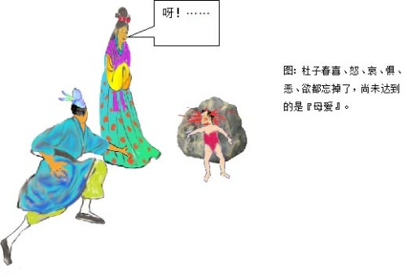

杜子春 江铭辉译
败光家产
杜子春是北周至隋朝年间的人。少年时，志向悠闲放荡，喜欢饮酒作乐，不事生产，不久就丧尽家财，非常落魄。于是投奔亲友，但亲友都认为他游手好闲，不努力工作，不欢迎他。某年冬天来临。他穿着破旧衣服，饿着肚子，排回在长安街上，说真的，他晚饭没有吃，内心彷徨不知到要去那里。到了东边市场的西门，更显露出饥寒交迫的脸色，他抬头向天长叹。
奇异老人
一位老人拄住着拐杖站在前面，问说：「你为何叹息？」 杜子春便说出心事，并且愤怒亲戚的寡义薄情，激动的情绪，表现在脸上。老人说：「要多少缗才够用呢？（缗：成串的铜钱，一千钱称缗）」杜子春说︰「三、五万缗就可以维持生活了。」老人说︰「不够吧。」杜子春改变说：「十万。」老人说︰「还不够！」杜子春于是说︰「一百万。」老人还说不够，杜子春说︰「三百万。」老人说︰「差不多。」于是从袖子里掏出一缗钱，说︰「先给你今晚使用，明天中午我在西街的波斯府宅等你，你可别来晚了啊！」
第一次资助
第二天中午杜子春如期前往，老人果然给了他三百万缗，没留下姓名就走了。杜子春有了这么多钱，又放荡起来，自己认为有这么多钱，一生不会再流落他乡了。从此他乘肥美的马匹、穿上等轻便的皮裘，每天和酒肉朋友狂饮，叫来乐队奏乐开心，到娼楼看歌舞，从来不把以后的生计放在心上。一、二年时间内便把老人给他的钱悄悄用光，于是把高贵的衣服和马车卖掉，换成便宜的，也把马换成驴，又把驴卖掉徒步，转眼间又像当初一样，无法谋生，自己又在东市叹息。
第二次资助
刚一长叹，那位老人就出现在面前，拉着他的手说︰「你怎么又弄到这个地步？真奇怪。没关系，我还会帮助你，要多少缗？」杜子春羞愧不敢回答。老人再三逼问，杜子春只是感到惭愧罢了！老人说︰「明天中午，你还到从前我约见你的地方。」第二天杜子春满腔羞愧的去了，得到一千万缗。杜子春在没拿到钱之前就决心要奋发向上，从事生产，好好谋生，石崇（西晋大富翁）、猗顿（战国时大工商业巨子）和他俩相比，都算一个小角色。但钱一到手，杜子春又变心了，放纵安逸的心情又故态复萌。不到一、二年，又比上次更贫穷。
第三次资助
有一天，他无意中又在老地方遇见了老人，由于太羞愧，他就用手遮着脸闪开。老人一把抓住他的衣服说︰「唉！不用躲？这是最笨的方法。」然后又给了他三千万，说︰「这次你要还不改过自新，你就永远接受贫穷吧！」杜子春自语：「我落迫到处流浪，无法谋生，亲戚中的富豪人家，没有人理睬我，唯独这位老人三次给我鉅款，我该怎样做才对得起他呢？」因此对老人说︰「我得到你这些资助，应该能够在人世间自已创立事业。我不但今后要自已创立事业，还要周济天下孤儿寡母，以此来挽回我失去的名誉和教化。我深深感激你老人家对我的恩惠，将来我建立一番事业之后，完全听命你的指示。」老人说︰「这正是我的心意啊！你有了成就以后，明年七月十五中元节时，在华山老君庙前那两棵桧树下等我吧。」 杜子春知道孤儿寡母大多流落在淮南，于是将钱运到扬州，买了一百顷良田，在城中盖了府宅，在重要的路口建了一百多间房子，召遍孤儿寡母分别住在各住宅里。赒助甥侄晚辈的婚嫁，迁葬死去亲戚，凡是对他有恩的都给以报答，有仇的，也报复了。
华山云台峰修道
完成了自己的心愿后，如期来到了老君庙前，见那老人正在桧树下悠闲的歌唱。见到杜子春后，就领他登上华山云台峰。进山四十多里后来到一个地方，见到一幢庄严整洁的房舍，不是凡人居住的。彩云覆盖在天边，仙鹤在屋顶上飞翔。屋子的正堂中间有一个九尺多炼丹药的炉子，炉内紫光闪耀，映亮了窗户。有九个玉女环绕着炉子侍立着，炉子前有青龙、后有白虎分别看守着。这时天色已逐渐暗了，再看那老人，身上穿的已不是凡间的衣服，而是戴着黄色帽子，穿着道袍的人了。
老人拿了三颗白石丸和一杯酒给了杜子春，叫他赶快吃下。又拿了一张虎皮铺在屋内的西墙下，要杜子春面向东方坐下，告诫杜子春说︰「你千万不要出声。纵使有大神、恶鬼、夜叉或者猛兽、恐怕的地狱紧景象出现，以及你的亲属们被绑着痛苦万分，这一切都不是真事。你都不要动不要说话，心里平静别害怕，最后就不会受到伤害，一心记住我这些话！」
老人说完离开后，杜子春向庭院望去，院子只有一个装满了水的大瓮罢了！忽然，看见山谷、悬崖布满战旗、到处都是戈矛和盾牌，千军万马大喊嘶叫声，惊天动地。有一个人自称大将军的人，身高一丈多，他和他的马都披着金色的铠甲，光芒耀眼。侍卫几百人，都拿着剑张着弓，直接冲到屋前，大声呵说︰「你是甚么人？大将军到了怎么不回避！」左边和右边的卫士持剑向前逼问他的姓名，还问他来自何方干甚么？他都不吭声。询问的卫士大怒，于是争先恐后的砍杀和射箭的声音像打雷一般，纷纷拥至！但他竟然仍不出声。大将军只好怒气冲冲地带着队伍离开。不久，又来了一群上万的猛虎、毒龙、狮子、狻猊（传说中龙生九子之一，形如狮，也有人直接说是西方的狮子）、蝮蛇和毒蝎，争先恐后地扑向杜子春要撕碎他、吞食他，有的还在他头顶跳来跳去，杜子春仍是不动声色。一会儿，牠们都散去了。跟着，突然大雨滂沱，天昏地暗，雷电交加，有大火轮在他左右滚动，他身体的前面和后面不断有打电和闪光，使人睁不开眼睛。片刻之间，院子水深一丈多，空中雷声隆隆电光闪闪，来势汹汹就像山脉的崩塌、河川的裂开，无法抵挡。眨眼之间，涌到到杜子春的坐位前，但他仍是端端正正坐着不理会。
接着那位大将军又来了，领着一群地狱中的牛头马面和面貌狰狞的恶鬼，将盛满沸水的大锅放在杜子春面前，鬼怪们手执二叉的长枪，围绕在四周。传命说︰「说出你的姓名，就放了你，如果不说，当心用叉把你放在大锅中！」杜子春又不说话。这时鬼怪们又把他的妻子抓来用力丢在台阶下，指着他的妻子向杜子春说︰「说出你的姓名，就放了她。」杜子春还是不回应。于是鬼怪们鞭打他的妻子直到皮破血流，用刀砍她，用箭射她，一会儿煮，一会儿烧，痛到不能忍受。他妻子嚎啕大哭说︰「我虽然又丑又笨，配不上你，但侥幸拿着毛巾、梳子作你的妻子侍奉你十几年了。现在我被大鬼抓来，我实在不堪折磨受，我不敢指望你向他们跪伏求情，只希望你说一句话，就能保全我的生命了。世上谁没有情，你仍忍心不出声吗？」他妻子边哭边喊又咒又骂，杜子春始终不理不睬。大将军也说︰「你以为我不敢毒害你的老婆！」说着命令取来了锉碓，从脚上开始一寸寸地锉。妻子哭声越来越快，杜子春全然不看。大将军说︰「这个家伙已练成妖术，不能让他在世上久留！」于是命令左右，把杜子春斩了。把他的魂魄带着去见阎罗王。阎罗王说︰「这不是云台峰的那个妖民吗？给我打入地狱！」于是杜子春被绑在红烧的铜柱、用铁棒杖打、碓杵的碓捣撞、磨石的研磨、进火坑、上热油锅、上刀山、剑树，遍尝地狱所有的酷刑。看起来不能忍受，然而由于牢记着老人的叮嘱，竟然都不叫一声。地狱的鬼卒向阎王报告，说所有的刑罚都用完了。
阎王说︰「这个家伙阴险恶毒，不该让他当男人，下辈子让他做女人罢。」于是让杜子春投胎转世到宋州单父县县丞王劝的家。转世为女子的杜子春，生下来就经常生病，针灸吃药看医生一天没断过，还掉进火里，摔到床下，始终不出声。转眼间已长成了一个容貌绝代的女子，但就是不说话，全家认为她是个哑女。亲戚和戏弄的人对她百般调戏侮辱，他总是一声不吭。县丞的同县有个叫卢生的进士，听说县丞的女儿容貌很美，就很爱慕，就央求媒人提亲。县丞家借口是哑女，把媒人推辞了。卢生说︰「妻子只要贤惠就好，不会说话又有甚么关系呢？正好给那些长舌妇作警戒。」县丞就答应了。卢生准备六礼，亲自引迎娶杜子春为妻。
数年之间，感情非常好，生了一个男孩，男孩已经两岁了，十分聪明。卢生抱着孩子和她说话，她不回应，想尽办法逗她，也不说话。卢生大怒说︰「古时贾大夫的妻子瞧不起他，始终不笑，但后来妻子看见贾大夫射山鸡的本领，都对他钦佩笑了。现在我的地位虽然不如贾大夫，但我的才学会比射山鸡不如吗？你却不屑跟我说话！大丈夫被妻子瞧不起，还要她的儿子做甚么！」说着就抓起孩子的两腿扔了出去，孩子的头摔在石头上，立刻头破， 鲜血溅出好几步。杜子春爱子心切，一时间忘了老人的吩咐，不觉失声喊︰「呀！……」声还没落息，他发现自己又坐在原来的房间，老道士也在面前。这时已经清晨4点（原文是说5更，中国古代把夜晚分成五个时段，用鼓打更报时，所以叫作五更，从19点开始每2点1更，5更是第二天清晨的3-5点），看见紫色的火焰熊熊往上窜，穿透了屋顶，大火四面窜起，整栋房屋全部烧毁。

从头开始
老道士说︰「你这个动作把我害得很惨！」就提着杜子春的头发扔进水瓮中，火立刻就熄灭了。老道士向前说︰「在你的心里，喜、怒、哀、惧、恶、欲都忘掉了，尚未达到的是『爱』罢了。卢生摔你孩子时若不出声，我的仙丹就会炼成，你也就成仙了。可叹啊，仙才真是太难得了！我的仙丹可以再炼，但你却还得回到人间去，好自为之！」说完给他指向远方的路，让他回去。
呀！……
杜子春之后不好意思的站在烧毁的房屋，看见那炼丹炉已经损坏，当中有根铁柱，有手臂那么粗，好几尺长，老道正脱下衣服，用刀子削那铁柱。杜子春回到家后，非常悔恨他当初忘了对仙师所发的誓言，想回去再为老道效力以弥补过失。但到云台峰，甚么也没找到，怀着悔恨的心情回来。
《续玄怪录》杜子春，唐李复言原文
杜子春者，盖周隋间人。少落拓，不事家产，然以志气闲旷，纵酒闲游。资产荡尽，投于亲故，皆以不事事见弃。方冬，衣破腹空，徒行长安中，日晚未食，彷徨不知所往。于东市西门，饥寒之色可掬，仰天长吁。有一老人策杖于前，问曰：“君子何叹﹖”春言其心，且愤其亲戚之疏薄也，感激之气，发于颜色。老人曰：“几缗则丰用﹖”子春曰：“三五万则可以活矣。”老人曰：“未也。”更言之：“十万。”曰：“未也。”乃言“百万”。亦曰：“未也。”曰：“三百万。”乃曰：“可矣。”于是袖出一缗曰：“给子今夕，明日午时，候子于西市波斯邸，慎无后期。”及时子春往，老人果与钱三百万，不告姓名而去。子春既富，荡心复炽，自以为终身不复羁旅也。乘肥衣轻，会酒徒，征丝管，歌舞于倡楼，不复以治生为意。一二年间，稍稍而尽，衣服车马，易贵从贱，去马而驴，去驴而徒，倏忽如初。既而复无计，自叹于市门。发声而老人到，握其手曰：“君复如此，奇哉。吾将复济子。几缗方可﹖”子春惭不应。老人因逼之，子春愧谢而已。老人：“明日午时，来前期处。”子春忍愧而往，得钱一千万。未受之初，愤发，以为从此谋身治生，石季伦﹑猗顿小竖耳。钱既入手，心又翻然，纵适之情，又却如故。不一二年间，贫过旧日。复遇老人于故处，子春不胜其愧，掩面而走。老人牵裾止之，又曰：“嗟乎拙谋也。”因与三千万，：“此而不痊，则子贫在膏育矣。”子春曰：“吾落拓邪游，生涯罄尽，亲戚豪族，无相顾者，独此叟三
6
给我，我何以当之﹖”因谓老人曰：“吾得此，人间之事可以立，孤孀可以衣食，于名教复圆矣。感叟深惠，立事之后，唯叟所使。”老人曰：“吾心也﹗子治生毕，来岁中元，见我于老君双桧下。”子春以孤孀多寓淮南，遂转资扬州，买良田百顷，郭中起甲第，要路置邸百余间，悉召孤孀，分居第中。婚嫁甥侄，迁袱族亲，恩者煦之，仇者复之。既毕事，及期而往。老人者方啸于二桧之阴。遂与登华山云台峰。入四十里余，见一处，室屋严洁，非常人居。彩云遥覆，惊鹤飞翔其上。有正堂，中有药炉，高九尺余，紫焰光发，灼焕窗户。玉女九人，环炉而立﹔青龙白虎，分据前后。其时日将暮，老人者，不复俗衣，乃黄冠缝帔士也。持白石三丸，酒一卮，遗子春，令快餐之讫。取一虎皮，铺于内西壁，东向而坐，戒曰：“慎勿语。虽尊神恶鬼夜叉，猛兽地狱﹔及君之亲属，为所困缚万苦，皆非真实。但当不动不语，宜安心莫惧，终无所苦。当一心念吾所言。”言讫而去。子春视庭，唯一巨瓮，满中贮水而已。道士适去，旌旗戈甲，千乘万骑，遍满崖谷，呵叱之声，震动天地。有一人称大将军，身长丈余，人马皆着金甲，光芒射人。亲卫数百人，皆杖剑张弓，直入堂前，呵曰：“汝是何人﹖敢不避大将军。”左右竦剑而前，逼问姓名，又问作何物，皆不对。问者大怒，摧斩争射之声如雷，竟不应。将军者极怒而去。俄而猛虎毒龙，狻猊狮子，蝮蝎万计，哮吼拿攫而争前欲搏噬，或跳过其上，子春神色不动。有顷而散。既而大雨滂澍，雷电晦暝，火轮走其左右，电光掣其前后，目不得开。须臾，庭际水深丈余，流电吼雷，势若山川开破，不可制止。瞬息之间，波及坐下，子春端坐不顾。未顷而将军者复来，引牛头狱卒，奇貌鬼神，将大镬汤而置子春前，长枪两叉，四面周匝，传命曰：“肯言姓名即放，不肯言，即当心取叉置之镬中。”又不应。因执其妻来，拽于阶下，指曰：“言姓名免之。”又不应。及鞭捶流血，或射或斫，或煮或烧，苦不可忍。其妻号哭曰：“诚为陋拙，有辱君子，然幸得执巾栉，奉事十余年矣。今为尊鬼所执，不胜其苦﹗不敢望君匍匐拜乞，但得公一言，即全性命矣。人谁无情，君乃忍惜一言﹖”雨泪庭中，且咒且骂，春终不顾。将军且曰：“吾不能毒汝妻耶﹗”令取锉碓，从脚寸寸锉之。妻叫哭愈急，竟不顾之。将军曰：“此贼妖术已成，不可使久在世间。”敕左右斩之。斩讫，魂魄被领见阎罗王。曰：“此乃云台峰妖民乎﹖捉付狱中。”于是镕铜铁杖﹑碓捣硙磨﹑火坑镬汤﹑刀山剑树之苦，无不备尝。然心念道士之言，亦似可忍，竟不呻吟。狱卒告受罪毕。王：“此人阴贼，不合得作男，宜令作女人。”配生宋州单父县丞王劝家。生而多病，针灸药医，略无停日。亦尝坠火堕床，痛苦不齐，终不失声。俄而长大，容色绝代，而口无声，其家目为哑女。亲戚狎者，侮之万端，终不能对。同乡有进士卢圭者，闻其容而慕之，因媒氏求焉。其家以哑辞之。卢曰：“苟为妻而贤，何用言矣﹖亦足以戒长舌之妇。”乃许之。卢生备六礼，亲迎为妻。数年，恩情甚笃，生一男，仅二岁，聪慧无敌。卢抱儿与之言，不应﹔多方引之，终无辞。卢大怒曰：“昔贾大夫之妻鄙其夫，才不笑，然观其射雉，尚释其憾。今吾陋不及贾，而文艺非徒射雉也，而竟不言﹗大丈夫为妻所鄙。安用其子。”乃持两足，以头扑于石上，应手而碎，血溅数步。子春爱生于心，忽忘其约，不觉失声云：
7
“噫……”噫声未息，身坐故处，道士者亦在其前。初五更矣，见其紫焰穿屋上，大火起四合，屋室俱焚。道士叹曰：“错大误余乃如是。”因提其发发，投水瓮中，未顷火息。道士前曰：“吾子之心，喜怒哀惧恶欲皆忘矣，所未臻者爱而已。向使子无噫声，吾之药成，子亦上仙矣。嗟乎，仙才之难得也﹗吾药可重炼，而子之身犹为世界所容矣，勉之哉。”遥指路使归。子春强登基观焉，其炉已坏，中有铁柱，大如臂，长数尺，道士脱衣，以刀子削之。子春既归，愧其忘誓，复自效以谢其过。行至云台峰，绝无人迹，叹恨而归。